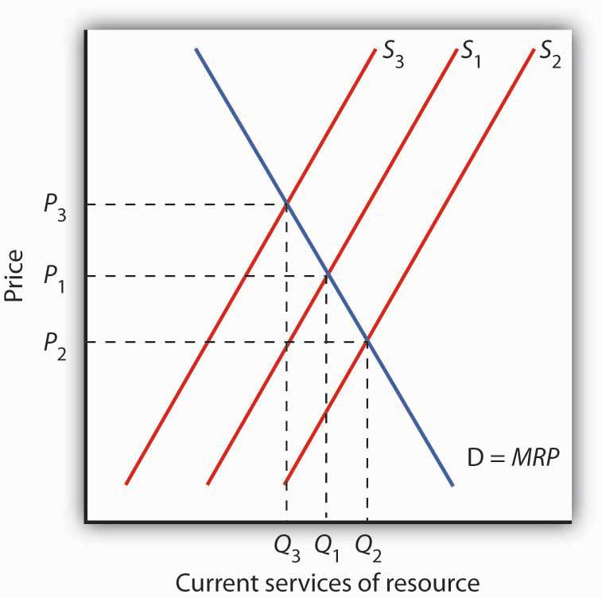
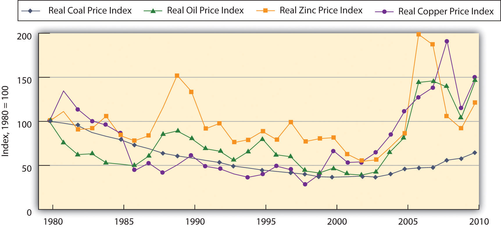
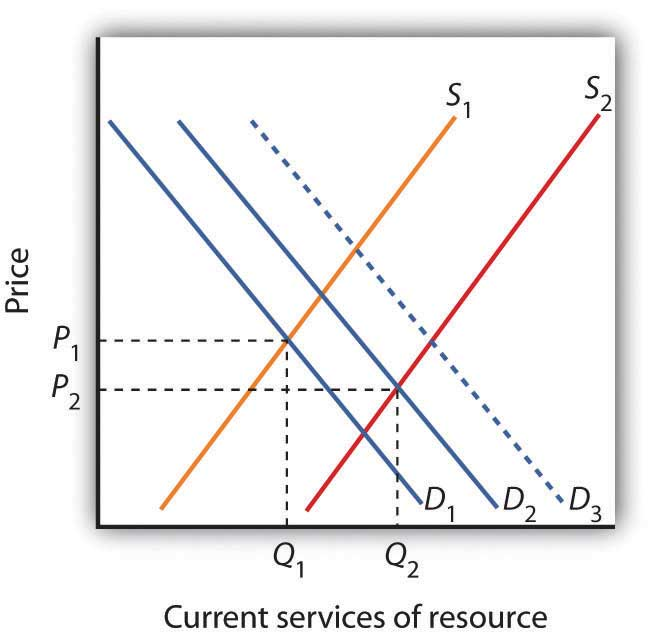
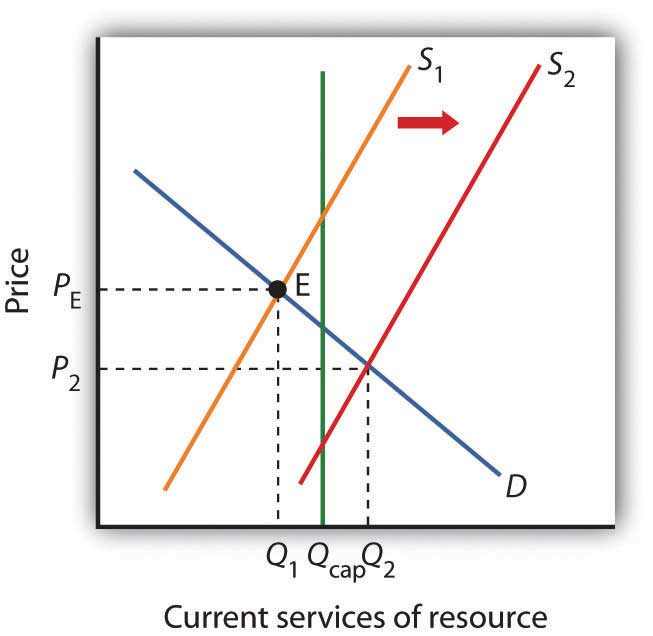
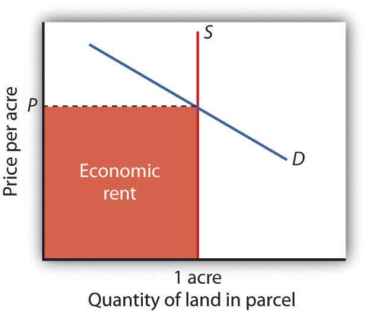

The race to build the “Internet in the Sky” started in the early 1990s. One plan was to build 840 low earth-orbiting (LEO) satellites that would allow information to be sent and received instantaneously anywhere on the face of the globe. At least that was the plan.
A number of telecommunication industry giants, as well as some large manufacturing companies, were impressed with the possibilities. They saw what they thought was a profitable opportunity and decided to put up some financial capital. Craig McCaw, who made a fortune developing and then selling to AT&T, the world’s largest cellular phone network, became chair of Teledesic, the company he formed to build the LEO satellite system. McCaw put up millions of dollars to fund the project, as did Microsoft’s Bill Gates and Prince Alwaleed Bin Talal Bin Abdulaziz of Saudi Arabia. Boeing, Motorola, and Matra Marconi Space, Europe’s leading satellite manufacturer, became corporate partners. Altogether, the company raised almost a billion dollars. The entire project was estimated to cost $9 billion.
But, alas, a decade later the company had shifted into very low gear. From the initial plan for 840 satellites, the project was scaled back to 300 satellites and then to a mere 30. Then, in 2003 in a letter to the U.S. Federal Communications commission, it announced that it was giving up its license to use a large part of the radio spectrum.Peter B. De Selding, “Teledesic Plays Its Last Card, Leaves the Game,” Space News Business Report online, July 7, 2005.
What happened to this dream? The development of cellular networks to handle data and video transmissions may have made the satellite system seem unnecessary. In contrast to a satellite system that has to be built in total in order to bring in a single customer, wireless companies were able to build their customer base city by city.
Even if the project had become successful, the rewards to the companies and to the individuals that put their financial capital into the venture would have been a long time in coming. Service was initially scheduled to begin in 2001, but Teledesic did not even sign a contract to build its first two satellites until February 2002, and six months later the company announced that work on those had been suspended.
Teledesic’s proposed venture was bigger than most capital projects, but it shares some basic characteristics with any acquisition of capital by firms. The production of capital—the goods used in producing other goods and services—requires sacrificing consumption. The returns to capital will be spread over the period in which the capital is used. The choice to acquire capital is thus a choice to give up consumption today in hopes of returns in the future. Because those returns are far from certain, the choice to acquire capital is inevitably a risky one.
For all its special characteristics, however, capital is a factor of production. As we investigate the market for capital, the concepts of marginal revenue product, marginal factor cost, and the marginal decision rule that we have developed will continue to serve us. The big difference is that the benefits and costs of holding capital are distributed over time.
We will also examine markets for natural resources in this chapter. Like decisions involving capital, choices in the allocation of natural resources have lasting effects. For potentially exhaustible natural resources such as oil, the effects of those choices last forever.
For the analysis of capital and natural resources, we shift from the examination of outcomes in the current period to the analysis of outcomes distributed over many periods. Interest rates, which link the values of payments that occur at different times, will be central to our analysis.
Time, the saying goes, is nature’s way of keeping everything from happening all at once. And the fact that everything does not happen at once introduces an important complication in economic analysis.
When a company decides to use funds to install capital that will not begin to produce income for several years, it needs a way to compare the significance of funds spent now to income earned later. It must find a way to compensate financial investors who give up the use of their funds for several years, until the project begins to pay off. How can payments that are distributed across time be linked to one another? Interest rates are the linkage mechanism; we shall investigate how they achieve that linkage in this section.
Consider a delightful problem of choice. Your Aunt Carmen offers to give you $10,000 now or $10,000 in one year. Which would you pick?
Most people would choose to take the payment now. One reason for that choice is that the average level of prices is likely to rise over the next year. The purchasing power of $10,000 today is thus greater than the purchasing power of $10,000 a year hence. There is also a question of whether you can count on receiving the payment. If you take it now, you have it. It is risky to wait a year; who knows what will happen?
Let us eliminate both of these problems. Suppose that you are confident that the average level of prices will not change during the year, and you are absolutely certain that if you choose to wait for the payment, you and it will both be available. Will you take the payment now or wait?
Chances are you would still want to take the payment now. Perhaps there are some things you would like to purchase with it, and you would like them sooner rather than later. Moreover, if you wait a year to get the payment, you will not be able to use it while you are waiting. If you take it now, you can choose to spend it now or wait.
Now suppose Aunt Carmen wants to induce you to wait and changes the terms of her gift. She offers you $10,000 now or $11,000 in one year. In effect, she is offering you a $1,000 bonus if you will wait a year. If you agree to wait a year to receive Aunt Carmen’s payment, you will be accepting her promise to provide funds instead of the funds themselves. Either will increase your wealthThe sum of assets less liabilities., which is the sum of all your assets less all your liabilities. AssetsAnything of value. are anything you have that is of value; liabilitiesObligations to make future payments. are obligations to make future payments. Both a $10,000 payment from Aunt Carmen now and her promise of $11,000 in a year are examples of assets. The alternative to holding wealth is to consume it. You could, for example, take Aunt Carmen’s $10,000 and spend it for a trip to Europe, thus reducing your wealth. By making a better offer—$11,000 instead of $10,000—Aunt Carmen is trying to induce you to accept an asset you will not be able to consume during the year.
The $1,000 bonus Aunt Carmen is offering if you will wait a year for her payment is interest. In general, interestA payment made to people who agree to postpone their use of wealth. is a payment made to people who agree to postpone their use of wealth. The interest rateThe opportunity cost of using wealth today, expressed as a percentage of the amount of wealth whose use is postponed. represents the opportunity cost of using wealth today, expressed as a percentage of the amount of wealth whose use is postponed. Aunt Carmen is offering you $1,000 if you will pass up the $10,000 today. She is thus offering you an interest rate of 10% ( ).
Suppose you tell Aunt Carmen that, given the two options, you would still rather have the $10,000 today. She now offers you $11,500 if you will wait a year for the payment—an interest rate of 15% ( ). The more she pays for waiting, the higher the interest rate.
You are probably familiar with the role of interest rates in loans. In a loan, the borrower obtains a payment now in exchange for promising to repay the loan in the future. The lender thus must postpone his or her use of wealth until the time of repayment. To induce lenders to postpone their use of their wealth, borrowers offer interest. Borrowers are willing to pay interest because it allows them to acquire the sum now rather than having to wait for it. And lenders require interest payments to compensate them for postponing their own use of their wealth.
We saw in the previous section that people generally prefer to receive a payment of some amount today rather than wait to receive that same amount later. We may conclude that the value today of a payment in the future is less than the dollar value of the future payment. An important application of interest rates is to show the relationship between the current and future values of a particular payment.
To see how we can calculate the current value of a future payment, let us consider an example similar to Aunt Carmen’s offer. This time you have $1,000 and you deposit it in a bank, where it earns interest at the rate of 10% per year.
How much will you have in your bank account at the end of one year? You will have the original $1,000 plus 10% of $1,000, or $1,100:
More generally, if we let P0 equal the amount you deposit today, r the percentage rate of interest, and P1 the balance of your deposit at the end of 1 year, then we can write:
Equation 13.1
Factoring out the P0 term on the left-hand side of Equation 13.1, we have:
Equation 13.2
Equation 13.2 shows how to determine the future value of a payment or deposit made today. Now let us turn the question around. We can ask what P1, an amount that will be available 1 year from now, is worth today. We solve for this by dividing both sides of Equation 13.2 by (1 + r) to obtain:
Equation 13.3
Equation 13.3 suggests how we can compute the value today, P0, of an amount P1 that will be paid a year hence. An amount that would equal a particular future value if deposited today at a specific interest rate is called the present valueAn amount that would equal a particular future value if deposited today at a specific interest rate. of that future value.
More generally, the present value of any payment to be received n periods from now =
Equation 13.4
Suppose, for example, that your Aunt Carmen offers you the option of $1,000 now or $15,000 in 30 years. We can use Equation 13.4 to help you decide which sum to take. The present value of $15,000 to be received in 30 years, assuming an interest rate of 10%, is:
Assuming that you could earn that 10% return with certainty, you would be better off taking Aunt Carmen’s $1,000 now; it is greater than the present value, at an interest rate of 10%, of the $15,000 she would give you in 30 years. The $1,000 she gives you now, assuming an interest rate of 10%, in 30 years will grow to:
The present value of some future payment depends on three things.
Table 13.1 Time, Interest Rates, and Present Value
| Present Value of $15,000 | ||||
|---|---|---|---|---|
| Time until payment | ||||
| Interest rate (%) | 5 years | 10 years | 15 years | 20 years |
| 5 | $11,752.89 | $9,208.70 | $7,215.26 | $5,653.34 |
| 10 | 9,313.82 | 5,783.15 | 3,590.88 | 2,229.65 |
| 15 | 7,457.65 | 3,707.77 | 1,843.42 | 916.50 |
| 20 | 6,028.16 | 2,422.58 | 973.58 | 391.26 |
The higher the interest rate and the longer the time until payment is made, the lower the present value of a future payment. The table below shows the present value of a future payment of $15,000 under different conditions. The present value of $15,000 to be paid in five years is $11,752.89 if the interest rate is 5%. Its present value is just $391.26 if it is to be paid in 20 years and the interest rate is 20%.
The concept of present value can also be applied to a series of future payments. Suppose you have been promised $1,000 at the end of each of the next 5 years. Because each payment will occur at a different time, we calculate the present value of the series of payments by taking the value of each payment separately and adding them together. At an interest rate of 10%, the present value P0 is:
Interest rates can thus be used to compare the values of payments that will occur at different times. Choices concerning capital and natural resources require such comparisons, so you will find applications of the concept of present value throughout this chapter, but the concept of present value applies whenever costs and benefits do not all take place in the current period.
State lottery winners often have a choice between a single large payment now or smaller payments paid out over a 25- or 30-year period. Comparing the single payment now to the present value of the future payments allows winners to make informed decisions. For example, in June 2005 Brad Duke, of Boise, Idaho, became the winner of one of the largest lottery prizes ever. Given the alternative of claiming the $220.3 million jackpot in 30 annual payments of $7.4 million or taking $125.3 million in a lump sum, he chose the latter. Holding unchanged all other considerations that must have been going through his mind, he must have thought his best rate of return would be greater than 4.17%. Why 4.17%? Using an interest rate of 4.17%, $125.3 million is equal to slightly less than the present value of the 30-year stream of payments. At all interest rates greater than 4.17%, the present value of the stream of benefits would be less than $125.3 million. At all interest rates less than 4.17%, the present value of the stream of payments would be more than $125.3 million. Our present value analysis suggests that if he thought the interest rate he could earn was more than 4.17%, he should take the lump sum payment, which he did.
We compute the present value, P0, of a sum to be received in n years, Pn, as:
Suppose your friend Sara asks you to lend her $5,000 so she can buy a used car. She tells you she can pay you back $5,200 in a year. Reliable Sara always keeps her word. Suppose the interest rate you could earn by putting the $5,000 in a savings account is 5%. What is the present value of her offer? Is it a good deal for you or not? What if the interest rate on your savings account is only 3%?
It is a tale that has become all too familiar.
Call him Roger Johnson. He has just learned that his cancer is not treatable and that he has only a year or two to live. Mr. Johnson is unable to work, and his financial burdens compound his tragic medical situation. He has mortgaged his house and sold his other assets in a desperate effort to get his hands on the cash he needs for care, for food, and for shelter. He has a life insurance policy, but it will pay off only when he dies. If only he could get some of that money sooner…
The problem facing Mr. Johnson has spawned a market solution—companies and individuals that buy the life insurance policies of the terminally ill. Mr. Johnson could sell his policy to one of these companies or individuals and collect the purchase price. The buyer takes over his premium payments. When he dies, the company will collect the proceeds of the policy.
The industry is called the viatical industry (the term viatical comes from viaticum, a Christian sacrament given to a dying person). It provides the terminally ill with access to money while they are alive; it provides financial investors a healthy interest premium on their funds.
It is a chilling business. Potential buyers pore over patient’s medical histories, studying T-cell counts and other indicators of a patient’s health. From the buyer’s point of view, a speedy death is desirable, because it means the investor will collect quickly on the purchase of a patient’s policy.
A patient with a life expectancy of less than six months might be able to sell his or her life insurance policy for 80% of the face value. A $200,000 policy would thus sell for $160,000. A person with a better prognosis will collect less. Patients expected to live two years, for example, might get only 60% of the face value of their policies.
Are investors profiting from the misery of others? Of course they are. But, suppose that investors refused to take advantage of the misfortune of the terminally ill. That would deny dying people the chance to acquire funds that they desperately need. As is the case with all voluntary exchange, the viatical market creates win-win situations. Investors “win” by earning high rates of return on their investment. And the dying patient? He or she is in a terrible situation, but the opportunity to obtain funds makes that person a “winner” as well.
Kim D. Orr, a former agent with Life Partners Inc. (www.lifepartnersinc.com), one of the leading firms in the viatical industry, recalled a case in his own family. “Some years ago, I had a cousin who died of AIDS. He was, at the end, destitute and had to rely totally on his family for support. Today, there is a broad market with lots of participants, and a patient can realize a high fraction of the face value of a policy on selling it. The market helps buyers and patients alike.”
In recent years, this industry has been renamed the life settlements industry, with policy transfers being offered to healthier, often elderly, policyholders. These healthier individuals are sometimes turning over their policies for a payment to third parties who pay the premiums and then collect the benefit when the policyholders die. Expansion of this practice has begun to raise costs for life insurers, who assumed that individuals would sometimes let their policies lapse, with the result that the insurance company does not have to pay claims on them. Businesses buying life insurance policies are not likely to let them lapse.
Sources: Personal Interview and Liam Pleven and Rachel Emma Silverman, “Investors Seek Profit in Strangers’ Deaths”, The Wall Street Journal Online, 2 May 2006, p. C1.
The present value of $5,200 payable in a year with an interest rate of 5% is:
Since the present value of $5,200 is less than the $5,000 Sara has asked you to lend her, you would be better off refusing to make the loan. Another way of evaluating the loan is that Sara is offering a return on your $5,000 of 200/5,000 = 4%, while the bank is offering you a 5% return. On the other hand, if the interest rate that your bank is paying is 3%, then the present value of what Sara will pay you in a year is:
With your bank only paying a 3% return, Sara’s offer looks like a good deal.
The quantity of capital that firms employ in their production of goods and services has enormously important implications for economic activity and for the standard of living people in the economy enjoy. Increases in capital increase the marginal product of labor and boost wages at the same time they boost total output. An increase in the stock of capital therefore tends to raise incomes and improve the standard of living in the economy.
Capital is often a fixed factor of production in the short run. A firm cannot quickly retool an assembly line or add a new office building. Determining the quantity of capital a firm will use is likely to involve long-run choices.
A firm uses additional units of a factor until marginal revenue product equals marginal factor cost. Capital is no different from other factors of production, save for the fact that the revenues and costs it generates are distributed over time. As the first step in assessing a firm’s demand for capital, we determine the present value of marginal revenue products and marginal factor costs.
Suppose Carol Stein is considering the purchase of a new $95,000 tractor for her farm. Ms. Stein expects to use the tractor for five years and then sell it; she expects that it will sell for $22,000 at the end of the five-year period. She has the $95,000 on hand now; her alternative to purchasing the tractor could be to put $95,000 in a bond account earning 7% annual interest.
Ms. Stein expects that the tractor will bring in additional annual revenue of $50,000 but will cost $30,000 per year to operate, for net revenue of $20,000 annually. For simplicity, we shall suppose that this net revenue accrues at the end of each year.
Should she buy the tractor? We can answer this question by computing the tractor’s net present value (NPV)The value equal to the present value of all the revenues expected from an asset minus the present value of all the costs associated with it., which is equal to the present value of all the revenues expected from an asset minus the present value of all the costs associated with it. We thus measure the difference between the present value of marginal revenue products and the present value of marginal factor costs. If NPV is greater than zero, purchase of the asset will increase the profitability of the firm. A negative NPV implies that the funds for the asset would yield a higher return if used to purchase an interest-bearing asset. A firm will maximize profits by acquiring additional capital up to the point that the present value of capital’s marginal revenue product equals the present value of marginal factor cost.
If the revenues generated by an asset in period n equal Rn and the costs in period n equal Cn, then the net present value NPV0 of an asset expected to last for n years is:
Equation 13.5
To purchase the tractor, Ms. Stein pays $95,000. She will receive additional revenues of $50,000 per year from increased planting and more efficient harvesting, less the operating cost per year of $30,000, plus the $22,000 she expects to get by selling the tractor at the end of five years. The net present value of the tractor, NPV0 is thus given by:
Given the cost of the tractor, the net returns Ms. Stein projects, and an interest rate of 7%, Ms. Stein will increase her profits by purchasing the tractor. The tractor will yield a return whose present value is $2,690 greater than the return that could be obtained by the alternative of putting the $95,000 in a bond account yielding 7%.
Ms. Stein’s acquisition of the tractor is called investment. Economists define investmentAn addition to capital stock. as an addition to capital stock. Any acquisition of new capital goods therefore qualifies as investment.
Our analysis of Carol Stein’s decision regarding the purchase of a new tractor suggests the forces at work in determining the economy’s demand for capital. In deciding to purchase the tractor, Ms. Stein considered the price she would have to pay to obtain the tractor, the costs of operating it, the marginal revenue product she would receive by owning it, and the price she could get by selling the tractor when she expects to be done with it. Notice that with the exception of the purchase price of the tractor, all those figures were projections. Her decision to purchase the tractor depends almost entirely on the costs and benefits she expects will be associated with its use.
Finally, Ms. Stein converted all those figures to a net present value based on the interest rate prevailing at the time she made her choice. A positive NPV means that her profits will be increased by purchasing the tractor. That result, of course, depends on the prevailing interest rate. At an interest rate of 7%, the NPV is positive. At an interest rate of 8%, the NPV would be negative. At that interest rate, Ms. Stein would do better to put her funds elsewhere.
At any one time, millions of choices like that of Ms. Stein concerning the acquisition of capital will be under consideration. Each decision will hinge on the price of a particular piece of capital, the expected cost of its use, its expected marginal revenue product, its expected scrap value, and the interest rate. Not only will firms be considering the acquisition of new capital, they will be considering retaining existing capital as well. Ms. Stein, for example, may have other tractors. Should she continue to use them, or should she sell them? If she keeps them, she will experience a stream of revenues and costs over the next several periods; if she sells them, she will have funds now that she could use for something else. To decide whether a firm should keep the capital it already has, we need an estimate of the NPV of each unit of capital. Such decisions are always affected by the interest rate. At higher rates of interest, it makes sense to sell some capital rather than hold it. At lower rates of interest, the NPV of holding capital will rise.
Because firms’ choices to acquire new capital and to hold existing capital depend on the interest rate, the demand curve for capitalShows the quantity of capital firms intend to hold at each interest rate. in Figure 13.1 "The Demand Curve for Capital", which shows the quantity of capital firms intend to hold at each interest rate, is downward-sloping. At point A, we see that at an interest rate of 10%, $8 trillion worth of capital is demanded in the economy. At point B, a reduction in the interest rate to 7% increases the quantity of capital demanded to $9 trillion. At point C, at an interest rate of 4%, the quantity of capital demanded is $10 trillion. A reduction in the interest rate increases the quantity of capital demanded.
Figure 13.1 The Demand Curve for Capital

The quantity of capital firms will want to hold depends on the interest rate. The higher the interest rate, the less capital firms will want to hold.
The demand curve for capital for the economy is found by summing the demand curves of all holders of capital. Ms. Stein’s demand curve, for example, might show that at an interest rate of 8%, she will demand the capital she already has—suppose it is $600,000 worth of equipment. If the interest rate drops to 7%, she will add the tractor; the quantity of capital she demands rises to $695,000. At interest rates greater than 8%, she might decide to reduce her maintenance efforts for some of the capital she already has; the quantity of capital she demands would fall below $600,000. As with the demand for capital in the economy, we can expect individual firms to demand a smaller quantity of capital when the interest rate is higher.
Why might the demand for capital change? Because the demand for capital reflects the marginal revenue product of capital, anything that changes the marginal revenue product of capital will shift the demand for capital. Our search for demand shifters must thus focus on factors that change the marginal product of capital, the prices of the goods capital produces, and the costs of acquiring and holding capital. Let us discuss some factors that could affect these variables and thus shift the demand for capital.
Choices concerning capital are always based on expectations. Net present value is computed from the expected revenues and costs over the expected life of an asset. If firms’ expectations change, their demand for capital will change. If something causes firms to revise their sales expectations upward (such as stronger than expected sales in the recent past), it is likely to increase their demand for capital. Similarly, an event that dampens firms’ expectations (such as recent weak sales) is likely to reduce their demand for capital.
Technological changes can increase the marginal product of capital and thus boost the demand for capital. The discovery of new ways to integrate computers into production processes, for example, has dramatically increased the demand for capital in the last few years. Many universities are adding new classroom buildings or renovating old ones so they can better use computers in instruction, and businesses use computers in nearly every facet of operations.
Ultimately, the source of demand for factors of production is the demand for the goods and services produced by those factors. Economists say that the demand for a factor is a “derived” demand—derived, that is, from the demand for what the factor produces. As population and incomes expand, we can expect greater demand for goods and services, a change that will increase the demand for capital.
Firms achieve the greatest possible output for a given total cost by operating where the ratios of marginal product to factor price are equal for all factors of production. For a firm that uses labor (L) and capital (K), for example, this requires that MPL/PL = MPK/PK, where MPL and MPK are the marginal products of labor and capital, respectively, and PL and PK are the prices of labor and capital, respectively. Suppose these equalities hold and the price of labor rises. The ratio of the marginal product of labor to its price goes down, and the firm substitutes capital for labor. Similarly, an increase in the price of capital, all other things unchanged, would cause firms to substitute other factors of production for capital. The demand for capital, therefore, would fall.
Government can indirectly affect the price of capital through changes in tax policy. For example, suppose the government enacts an investment tax credit for businesses, that is, a deduction of a certain percentage of their spending on capital from their profits before paying taxes. Such a policy would effectively lower the price of capital, causing firms to substitute capital for other factors of production and increasing the demand for capital. The repeal of an investment tax credit would lead to a decrease in the demand for capital.
When a firm decides to expand its capital stock, it can finance its purchase of capital in several ways. It might already have the funds on hand. It can also raise funds by selling shares of stock, as we discussed in a previous chapter. When a firm sells stock, it is selling shares of ownership of the firm. It can borrow the funds for the capital from a bank. Another option is to issue and sell its own bonds. A bondA promise to pay back a certain amount at a certain time. is a promise to pay back a certain amount at a certain time. When a firm borrows from a bank or sells bonds, of course, it accepts a liability—it must make interest payments to the bank or the owners of its bonds as they come due.
Regardless of the method of financing chosen, a critical factor in the firm’s decision on whether to acquire and hold capital and on how to finance the capital is the interest rate. The role of the interest rate is obvious when the firm issues its own bonds or borrows from a bank. But even when the firm uses its own funds to purchase the capital, it is forgoing the option of lending those funds directly to other firms by buying their bonds or indirectly by putting the funds in bank accounts, thereby allowing the banks to lend the funds. The interest rate gives the opportunity cost of using funds to acquire capital rather than putting the funds to the best alternative use available to the firm.
The interest rate is determined in a market in the same way that the price of potatoes is determined in a market: by the forces of demand and supply. The market in which borrowers (demanders of funds) and lenders (suppliers of funds) meet is the loanable funds marketThe market in which borrowers (demanders of funds) and lenders (suppliers of funds) meet..
We will simplify our model of the role that the interest rate plays in the demand for capital by ignoring differences in actual interest rates that specific consumers and firms face in the economy. For example, the interest rate on credit cards is higher than the mortgage rate of interest, and large, established companies can borrow funds or issue bonds at lower interest rates than new, start-up companies can. Interest rates that firms face depend on a variety of factors, such as riskiness of the loan, the duration of the loan, and the costs of administering the loan. However, since we will focus on general tendencies that cause interest rates to rise or fall and since the various interest rates in the economy tend to move up and down together, the conclusions we reach about the market for loanable funds and how firms and consumers respond to interest rate changes will still be valid.
In the previous section we learned that a firm’s decision to acquire and keep capital depends on the net present value of the capital in question, which in turn depends on the interest rate. The lower the interest rate, the greater the amount of capital that firms will want to acquire and hold, since lower interest rates translate into more capital with positive net present values. The desire for more capital means, in turn, a desire for more loanable funds. Similarly, at higher interest rates, less capital will be demanded, because more of the capital in question will have negative net present values. Higher interest rates therefore mean less funding demanded.
Figure 13.2 The Demand and Supply of Loanable Funds

At lower interest rates, firms demand more capital and therefore more loanable funds. The demand for loanable funds is downward-sloping. The supply of loanable funds is generally upward-sloping. The equilibrium interest rate, rE, will be found where the two curves intersect.
Thus the demand for loanable funds is downward-sloping, like the demand for virtually everything else, as shown in Figure 13.2 "The Demand and Supply of Loanable Funds". The lower the interest rate, the more capital firms will demand. The more capital that firms demand, the greater the funding that is required to finance it.
Lenders are consumers or firms that decide that they are willing to forgo some current use of their funds in order to have more available in the future. Lenders supply funds to the loanable funds market. In general, higher interest rates make the lending option more attractive.
For consumers, however, the decision is a bit more complicated than it is for firms. In examining consumption choices across time, economists think of consumers as having an expected stream of income over their lifetimes. It is that expected income that defines their consumption possibilities. The problem for consumers is to determine when to consume this income. They can spend less of their projected income now and thus have more available in the future. Alternatively, they can boost their current spending by borrowing against their future income.
SavingIncome not spent on consumption. is income not spent on consumption. (We shall ignore taxes in this analysis.) DissavingConsumption that exceeds income during a given period. occurs when consumption exceeds income during a period. Dissaving means that the individual’s saving is negative. Dissaving can be financed either by borrowing or by using past savings. Many people, for example, save in preparation for retirement and then dissave during their retirement years.
Saving adds to a household’s wealth. Dissaving reduces it. Indeed, a household’s wealth is the sum of the value of all past saving less all past dissaving.
We can think of saving as a choice to postpone consumption. Because interest rates are a payment paid to people who postpone their use of wealth, interest rates are a kind of reward paid to savers. Will higher interest rates encourage the behavior they reward? The answer is a resounding “maybe.” Just as higher wages might not increase the quantity of labor supplied, higher interest rates might not increase the quantity of saving. The problem, once again, lies in the fact that the income and substitution effects of a change in interest rates will pull in opposite directions.
Consider a hypothetical consumer, Tom Smith. Let us simplify the analysis of Mr. Smith’s choices concerning the timing of consumption by assuming that there are only two periods: the present period is period 0, and the next is period 1. Suppose the interest rate is 8% and his income in both periods is expected to be $30,000.
Mr. Smith could, of course, spend $30,000 in period 0 and $30,000 in period 1. In that case, his saving equals zero in both periods. But he has alternatives. He could, for example, spend more than $30,000 in period 0 by borrowing against his income for period 1. Alternatively, he could spend less than $30,000 in period 0 and use his saving—and the interest he earns on that saving—to boost his consumption in period 1. If, for example, he spends $20,000 in period 0, his saving in period 0 equals $10,000. He will earn $800 interest on that saving, so he will have $40,800 to spend in the next period.
Suppose the interest rate rises to 10%. The increase in the interest rate has boosted the price of current consumption. Now for every $1 he spends in period 0 he gives up $1.10 in consumption in period 1, instead of $1.08, which was the amount that would have been given up in consumption in period 1 when the interest rate was 8%. A higher price produces a substitution effect that reduces an activity—Mr. Smith will spend less in the current period due to the substitution effect. The substitution effect of a higher interest rate thus boosts saving. But the higher interest rate also means that he earns more income on his saving. Consumption in the current period is a normal good, so an increase in income can be expected to increase current consumption. But an increase in current consumption implies a reduction in saving. The income effect of a higher interest rate thus tends to reduce saving. Whether Mr. Smith’s saving will rise or fall in response to a higher interest rate depends on the relative strengths of the substitution and income effects.
To see how an increase in interest rates might reduce saving, imagine that Mr. Smith has decided that his goal is to have $40,800 to spend in period 1. At an interest rate of 10%, he can reduce his saving below $10,000 and still achieve his goal of having $40,800 to spend in the next period. The income effect of the increase in the interest rate has reduced his saving, and consequently his desire to supply funds to the loanable funds market.
Because changes in interest rates produce substitution and income effects that pull saving in opposite directions, we cannot be sure what will happen to saving if interest rates change. The combined effect of all consumers’ and firms’ decisions, however, generally leads to an upward-sloping supply curve for loanable funds, as shown in Figure 13.2 "The Demand and Supply of Loanable Funds". That is, the substitution effect usually dominates the income effect.
The equilibrium interest rate is determined by the intersection of the demand and supply curves in the market for loanable funds.
If the quantity of capital demanded varies inversely with the interest rate, and if the interest rate is determined in the loanable funds market, then it follows that the demand for capital and the loanable funds market are interrelated. Because the acquisition of new capital is generally financed in the loanable funds market, a change in the demand for capital leads to a change in the demand for loanable funds—and that affects the interest rate. A change in the interest rate, in turn, affects the quantity of capital demanded on any demand curve.
The relationship between the demand for capital and the loanable funds market thus goes both ways. Changes in the demand for capital affect the loanable funds market, and changes in the loanable funds market can affect the quantity of capital demanded.
Figure 13.3 "Loanable Funds and the Demand for Capital" suggests how an increased demand for capital by firms will affect the loanable funds market, and thus the quantity of capital firms will demand. In Panel (a) the initial interest rate is r1. At r1 in Panel (b) K1 units of capital are demanded (on curve D1). Now suppose an improvement in technology increases the marginal product of capital, shifting the demand curve for capital in Panel (b) to the right to D2. Firms can be expected to finance the increased acquisition of capital by demanding more loanable funds, shifting the demand curve for loanable funds to D2 in Panel (a). The interest rate thus rises to r2. Consequently, in the market for capital the demand for capital is greater and the interest rate is higher. The new quantity of capital demanded is K2 on demand curve D2.
Figure 13.3 Loanable Funds and the Demand for Capital

The interest rate is determined in the loanable funds market, and the quantity of capital demanded varies with the interest rate. Thus, events in the loanable funds market and the demand for capital are interrelated. If the demand for capital increases to D2 in Panel (b), the demand for loanable funds is likely to increase as well. Panel (a) shows the result in the loanable funds market—a shift in the demand curve for loanable funds from D1 to D2 and an increase in the interest rate from r1 to r2. At r2, the quantity of capital demanded will be K2, as shown in Panel (b).
Events in the loanable funds market can also affect the quantity of capital firms will hold. Suppose, for example, that consumers decide to increase current consumption and thus to supply fewer funds to the loanable funds market at any interest rate. This change in consumer preferences shifts the supply curve for loanable funds in Panel (a) of Figure 13.4 "A Change in the Loanable Funds Market and the Quantity of Capital Demanded" from S1 to S2 and raises the interest rate to r2. If there is no change in the demand for capital D1, the quantity of capital firms demand falls to K2 in Panel (b).
Figure 13.4 A Change in the Loanable Funds Market and the Quantity of Capital Demanded

A change that begins in the loanable funds market can affect the quantity of capital firms demand. Here, a decrease in consumer saving causes a shift in the supply of loanable funds from S1 to S2 in Panel (a). Assuming there is no change in the demand for capital, the quantity of capital demanded falls from K1 to K2 in Panel (b).
Our model of the relationship between the demand for capital and the loanable funds market thus assumes that the interest rate is determined in the market for loanable funds. Given the demand curve for capital, that interest rate then determines the quantity of capital firms demand.
Table 13.2 "Two Routes to Changes in the Quantity of Capital Demanded" shows that a change in the quantity of capital that firms demand can begin with a change in the demand for capital or with a change in the demand for or supply of loanable funds. A change in the demand for capital affects the demand for loanable funds and hence the interest rate in the loanable funds market. The change in the interest rate leads to a change in the quantity of capital demanded. Alternatively, a change in the loanable funds market, which leads to a change in the interest rate, causes a change in quantity of capital demanded.
Table 13.2 Two Routes to Changes in the Quantity of Capital Demanded
| A change originating in the capital market | A change originating in the loanable funds market |
|---|---|
| 1. A change in the demand for capital leads to… | 1. A change in the demand for or supply of loanable funds leads to … |
| 2.…a change in the demand for loanable funds, which leads to… | 2.…a change in the interest rate, which leads to… |
| 3.…a change in the interest rate, which leads to… | 3.…a change in the quantity of capital demanded. |
| 4.…a change in the quantity of captial demanded. |
A change in the quantity of capital that firms demand can begin with a change in the demand for capital or with a change in the demand or supply of loanable funds.
Suppose that baby boomers become increasingly concerned about whether or not the government will really have the funds to make Social Security payments to them over their retirement years. As a result, they boost saving now. How would their decisions affect the market for loanable funds and the demand curve for capital?
In the 1960s in Michigan an experiment was conducted on a sample of 123 at-risk children. Through a random selection process, 58 children were selected to receive the intensive High/Scope Perry Preschool Program, while 65 children were placed in the control group. The program lasted for one or two short academic years and consisted of 2.5 hours per day in a center, home visits of 1.5 hours per day, and group meetings with parents. These 123 people have been surveyed periodically up to age 40.
The program was funded by government and total taxpayer cost per participant was about $15,000 in 2000 dollars. What were the program benefits? For the individuals, the main potential monetary benefit is increased earnings. For the public, potential benefits include higher tax receipts due to higher earnings, reductions in crime, and lower welfare payments to the recipients who participated in the program.
The following table shows the net present value (NPV), assuming an interest rate of 3%, for the individuals and for the public, as calculated by Clive Belfield et al. Notice that the specific benefits and costs are quite different depending on whether one is looking from the perspective of the individuals or of the public. For example, the participants’ families had lower childcare costs during the program; this is irrelevant to the public. The public incurred the cost of the program, while the participants did not. The benefits to the public of education for the average participant came in the form of lower grade retention and lower placement in special education classes, outweighing the public subsidy to more years of schooling by participants on average. The main benefit to the public stems from lower crime costs.
Assuming an interest rate of 3%, the lifetime net NPV to the average participant is just under $50,000 and it is about $180,000 to the public. To check how sensitive these results are to the choice of the interest rate, the researchers also calculated the NPV assuming a 7% interest rate. In that case, the NPV to the average participant was about $17,000 and about $67,000 to the public. Even pairing more conservative assumptions about the additional tax revenues, savings from reduced crime, and such with the higher interest rate did not alter the main finding of a positive NPV for males. For females, some of their very conservative estimates yielded a small negative NPV (about −$5,000), primarily due to lower female crime rates in general. They conclude that this analysis, along with other research on the costs and benefits of early education, provides compelling evidence that investment in early education pays off.
| To the Average Participant: | NPV* for Participants Only | NPV* for General Public |
|---|---|---|
| Program benefits | ||
| Childcare | $906 | $0 |
| Education | −$160 | $7,303 |
| Earnings | $50,448 | $14,078 |
| Crime | $0 | $171,473 |
| Welfare | −$2,005 | $2,768 |
| Total benefits | $49,190 | $195,622 |
| Program costs | $0 | $15,166 |
| Net present value | $49,190 | $180,455 |
| *Assuming a 3% interest rate | ||
Sources: Clive R. Belfield, Milagros Nores, Steve Barnett, and Lawrence Schweinhart, “The High/Scope Perry Preschool Program: Cost-Benefit Analysis Using Data From the Age-40 Followup,” Journal of Human Resources 41:1 (2006): 162–186.
An increase in saving at each interest rate implies a rightward shift in the supply curve of loanable funds. As a result, the equilibrium interest rate falls. With the lower interest rate, there is movement downward to the right along the demand-for-capital curve, as shown.

Natural resources are the gifts of nature. They include everything from oil to fish in the sea to magnificent scenic vistas. The stock of a natural resource is the quantity of the resource with which the earth is endowed. For example, a certain amount of oil lies in the earth, a certain population of fish live in the sea, and a certain number of acres make up an area such as Yellowstone National Park or Manhattan. These stocks of natural resources, in turn, can be used to produce a flow of goods and services. Each year, we can extract a certain quantity of oil, harvest a certain quantity of fish, and enjoy a certain number of visits to Yellowstone.
As with capital, we examine the allocation of natural resources among alternative uses across time. By definition, natural resources cannot be produced. Our consumption of the services of natural resources in one period can affect their availability in future periods. We must thus consider the extent to which the expected demands of future generations should be taken into account when we allocate natural resources.
Natural resources often present problems of property rights in their allocation. A resource for which exclusive property rights have not been defined will be allocated as a common property resource. In such a case, we expect that the marketplace will not generate incentives to use the resource efficiently. In the absence of government intervention, natural resources that are common property may be destroyed. In this section, we shall consider natural resources for which exclusive property rights have been defined. The public sector’s role in the allocation of common property resources is investigated in the chapter on the environment.
We can distinguish two categories of natural resources, those that are renewable and those that are not. A renewable natural resourceA resource whose services can be used in one period without necessarily reducing the stock of the resource that will be available in subsequent periods. is one whose services can be used in one period without necessarily reducing the stock of the resource that will be available in subsequent periods. The fact that they can be used in such a manner does not mean that they will be; renewable natural resources can be depleted. Wilderness areas, land, and water are renewable natural resources. The consumption of the services of an exhaustible natural resourceA resource whose services cannot be used in one period without reducing the stock of the resource that will be available in subsequent periods., on the other hand, necessarily reduces the stock of the resource. Oil and coal are exhaustible natural resources.
Owners of exhaustible natural resources can be expected to take the interests of future as well as current consumers into account in their extraction decisions. The greater the expected future demand for an exhaustible natural resource, the greater will be the quantity preserved for future use.
Suppose you are the exclusive owner of a deposit of oil in Wyoming. You know that any oil you pump from this deposit and sell cannot be replaced. You are aware that this is true of all the world’s oil; the consumption of oil inevitably reduces the stock of this resource.
If the quantity of oil in the earth is declining and the demand for this oil is increasing, then it is likely that the price of oil will rise in the future. Suppose you expect the price of oil to increase at an annual rate of 15%.
Given your expectation, should you pump some of your oil out of the ground and sell it? To answer that question, you need to know the interest rate. If the interest rate is 10%, then your best alternative is to leave your oil in the ground. With oil prices expected to rise 15% per year, the dollar value of your oil will increase faster if you leave it in the ground than if you pump it out, sell it, and purchase an interest-earning asset. If the market interest rate were greater than 15%, however, it would make sense to pump the oil and sell it now and use the revenue to purchase an interest-bearing asset. The return from the interest-earning asset, say 16%, would exceed the 15% rate at which you expect the value of your oil to increase. Higher interest rates thus reduce the willingness of resource owners to preserve these resources for future use.
Figure 13.5 Future Generations and Exhaustible Natural Resources
The current demand D for services of an exhaustible resource is given by the marginal revenue product (MRP). S1 reflects the current marginal cost of extracting the resource, the prevailing interest rate, and expectations of future demand for the resource. The level of current consumption is thus at Q1. If the interest rate rises, the supply curve shifts to S2, causing the price of the resource to fall to P2 and the quantity consumed to rise to Q2. A drop in the interest rate shifts the supply curve to S3, leading to an increase in price to P3 and a decrease in consumption to Q3.
The supply of an exhaustible resource such as oil is thus governed by its current price, its expected future price, and the interest rate. An increase in the expected future price—or a reduction in the interest rate—reduces the supply of oil today, preserving more for future use. If owners of oil expect lower prices in the future, or if the interest rate rises, they will supply more oil today and conserve less for future use. This relationship is illustrated in Figure 13.5 "Future Generations and Exhaustible Natural Resources". The current demand D for these services is given by their marginal revenue product (MRP). Suppose S1 reflects the current marginal cost of extracting the resource, the prevailing interest rate, and expectations of future demand for the resource. If the interest rate increases, owners will be willing to supply more of the natural resource at each price, thereby shifting the supply curve to the right to S2. The current price of the resource will fall. If the interest rate falls, the supply curve for the resource will shift to the left to S3 as more owners of the resource decide to leave more of the resource in the earth. As a result, the current price rises.
Since using nonrenewable resources would seem to mean exhausting a fixed supply, then one would expect the prices of exhaustible natural resources to rise over time as the resources become more and more scarce. Over time, however, the prices of most exhaustible natural resources have fluctuated considerably relative to the prices of all other goods and services. Figure 13.6 "Natural Resource Prices, 1980–2010" shows the prices of four major exhaustible natural resources 1980 to 2010. Prices have been adjusted for inflation to reflect the prices of these resources relative to other prices.
During the final two decades of the twentieth century, exhaustible natural resource prices were generally falling. With the start of the current century, their prices have been rising. In short, why do prices of natural resources fluctuate as they do? Should the process of continuing to “exhaust” them just drive their prices up over time?
Figure 13.6 Natural Resource Prices, 1980–2010
The chart shows changes in the prices of four exhaustible resources—copper, zinc, oil, and coal from 1980–2010.
Sources: U.S. Bureau of the Census, Statistical Abstract of the United States, online; U.S. Energy Information Administration, Annual Energy Review, online; U.S. Geological Survey, Minerals Yearbook, online.
In setting their expectations, people in the marketplace must anticipate not only future demand but also future supply as well. Demand in future periods could fall short of expectations if new technologies produce goods and services using less of a natural resource. That has clearly happened. The quantity of energy—which is generally produced using exhaustible fossil fuels—used to produce a unit of output has fallen by more than half in the last three decades. At the same time, rising income levels around the world, particularly in China and India over the last two decades, have led to increased demand for energy. Supply increases when previously unknown deposits of natural resources are discovered and when technologies are developed to extract and refine resources more cheaply. Figure 13.7 "An Explanation for Falling Resource Prices" shows that discoveries that reduce the demand below expectations and increase the supply of natural resources can push prices down in a way that people in previous periods might not have anticipated. This scenario explains the fall in some prices of natural resources in the latter part of the twentieth century. To explain the recent rise in exhaustible natural resources prices, we can say that the factors contributing to increased demand for energy and some other exhaustible natural resources were outweighing the factors contributing to increased supply, resulting in higher prices—a scenario opposite to what is shown in Figure 13.7 "An Explanation for Falling Resource Prices". This upward trend began to reverse itself again in late 2008, as the world economies began to slump and then picked up again.
Figure 13.7 An Explanation for Falling Resource Prices
Demand for resources has increased over time from D1 to D2, but this shift in demand is less than it would have been (D3) if technologies for producing goods and services using less resource per unit of output had not been developed. Supply of resources has increased from S1 to S2 as a result of the discovery of deposits of natural resources and/or development of new technologies for extracting and refining resources. As a result, the prices of many natural resources have fallen.
Will we ever run out of exhaustible natural resources? Past experience suggests that we will not. If no new technologies or discoveries that reduce demand or increase supply occur, then resource prices will rise. As they rise, consumers of these resources will demand lower quantities of these resources. Eventually, the price of a particular resource could rise so high that the quantity demanded would fall to zero. At that point, no more of the resource would be used. There would still be some of the resource in the earth—it simply would not be practical to use more of it. The market simply will not allow us to “run out” of exhaustible natural resources.
As is the case with exhaustible natural resources, our consumption of the services of renewable natural resources can affect future generations. Unlike exhaustible resources, however, renewable resources can be consumed in a way that does not diminish their stocks.
The quantity of a renewable natural resource that can be consumed in any period without reducing the stock of the resource available in the next period is its carrying capacityThe quantity of a renewable natural resource that can be consumed in any period without reducing the stock of the resource available in the next period.. Suppose, for example, that a school of 10 million fish increases by 1 million fish each year. The carrying capacity of the school is therefore 1 million fish per year—the harvest of 1 million fish each year will leave the size of the population unchanged. Harvests that exceed a resource’s carrying capacity reduce the stock of the resource; harvests that fall short of it increase that stock.
As is the case with exhaustible natural resources, future generations have a stake in current consumption of a renewable resource. Figure 13.8 "Future Generations and Renewable Resources" shows the efficient level of consumption of such a resource. Suppose Qcap is the carrying capacity of a particular resource and S1 is the supply curve that reflects the current marginal cost of utilizing the resource, including costs for the labor and capital required to make its services available, given the interest rate and expected future demand. The efficient level of consumption in the current period is found at point E, at the intersection of the current period’s demand and supply curves. Notice that in the case shown, current consumption at Q1 is less than the carrying capacity of the resource. A larger stock of this resource will be available in subsequent periods than is available now.
Figure 13.8 Future Generations and Renewable Resources
The efficient quantity of services to consume is determined by the intersection S1 and the demand curve D. This intersection occurs at point E at a quantity of Q1. This lies below the carrying capacity Qcap. An increase in interest rates, however, shifts the supply curve to S2. The efficient level of current consumption rises to Q2, which now exceeds the carrying capacity of the resource.
Now suppose interest rates increase. As with nonrenewable resources, higher interest rates shift the supply curve to the right, as shown by S2. The result is an increase in current consumption to Q2. Now consumption exceeds the carrying capacity, and the stock of the resource available to future generations will be reduced. While this solution may be efficient, the resource will not be sustained over time at current levels.
If society is concerned about a reduction in the amount of the resource available in the future, further steps may be required to preserve it. For example, if trees are being cut down faster than they are being replenished in a particular location, such as the Amazon in Brazil, a desire to maintain biological diversity might lead to conservation efforts.
We turn finally to the case of land that is used solely for the space it affords for other activities—parks, buildings, golf courses, and so forth. We shall assume that the carrying capacity of such land equals its quantity.
Figure 13.9 The Market for Land
The price of a one-acre parcel of land is determined by the intersection of a vertical supply curve and the demand curve for the parcel. The sum paid for the parcel, shown by the shaded area, is economic rent.
The supply of land is a vertical line. The quantity of land in a particular location is fixed. Suppose, for example, that the price of a one-acre parcel of land is zero. At a price of zero, there is still one acre of land; quantity is unaffected by price. If the price were to rise, there would still be only one acre in the parcel. That means that the price of the parcel exceeds the minimum price—zero—at which the land would be available. The amount by which any price exceeds the minimum price necessary to make a resource available is called economic rentThe amount by which any price exceeds the minimum price necessary to make a resource available..
The concept of economic rent can be applied to any factor of production that is in fixed supply above a certain price. In this sense, much of the salary received by Judge Judy constitutes economic rent. At a low enough salary, she might choose to leave the television industry. How low would depend on what she could earn in a best alternative occupation. If she earns $45 million per year now but could earn $200,000 in a best alternative occupation, then $44.8 million of her salary is economic rent. Most of her current earnings are in the form of economic rent, because her salary substantially exceeds the minimum price necessary to keep her supplying her resources to current purposes.
You have just been given an oil well in Texas by Aunt Carmen. The current price of oil is $45 per barrel, and it is estimated that your oil deposit contains about 10,000 barrels of oil. For simplicity, assume that it does not cost anything to extract the oil and get it to market and that you must decide whether to empty the well now or wait until next year. Suppose the interest rate is 10% and that you expect that the price of oil next year will rise to $54 per barrel. What should you do? Would your decision change if the choice were to empty the well now or in two years?
Back in 1981, Julian Simon, an economist at the Cato Institute, issued a challenge to those who argued that rising prices signaled that the earth was likely to run out of natural resources. He and many other economists argued that rising prices would lead firms to make substitutions and to seek new discoveries and new technologies that would bring prices back down. He told doubters to pick any five exhaustible natural resources. If their average price, adjusted for inflation, rose over the next decade, Simon would pay $1,000. If their price fell, however, he would get the $1,000. Paul Ehrlich, an ecologist, took Mr. Simon up on his offer. Mr. Ehrlich is the author of the 1968 book, The Population Bomb, that argued resource scarcity would lead to the starvation of hundreds of millions of people by 1990. Mr. Ehrlich picked chromium, copper, nickel, tin, and tungsten. Since their prices fell over the decade, Mr. Ehrlich paid Mr. Simon $1,000.
In 1990, Mr. Simon offered a “double-or-quits” rematch for any future date. Mr. Simon died in 1998 and Mr. Ehrlich did not agree to take him on again. But, if the original bet were recalculated today, Mr. Ehrlich would have won. The index of the average price of the five resources went from 100 in 1980 down between 40 and 60 for much of the 1990s and is now back to about 100.
Those in the Simon camp, who have been dubbed the Cornucopians, might argue that the recent price rise is due to increased demand from developing countries and that new supplies, technologies, or substitutes will be found that will bring prices back down. Those in the Ehrlich camp, who have been dubbed the Malthusians after Thomas Malthus, the late eighteenth-century economist who argued that population growth would exceed the growth of food supplies, might respond that scarcity is finally taking over.
Which way would you bet?
Source: “The Revenge of Malthus: A Famous Bet Recalculated,” Economist, August 6, 2011, online at http://www.economist.com/node/21525472.
Since you expect oil prices to rise ($54 − 45)/$45 = 20% and the interest rate is only 10%, you would be better off waiting a year before emptying the well. Another way of seeing this is to compute the present value of the oil a year from now:
Po = ($54 * 10,000)/(1 + 0.10)1 = $490,909.09Since $490,909 is greater than the $45*10,000 = $450,000 you could earn by emptying the well now, the present value calculation shows the rewards of waiting a year.
If the choice is to empty the well now or in 2 years, however, you would be better off emptying it now, since the present value is only $446,280.99:
Po = ($54 * 10,000)/(1 + 0.10)2 = $446,280.99Time is the complicating factor when we analyze capital and natural resources. Because current choices affect the future stocks of both resources, we must take those future consequences into account. And because a payment in the future is worth less than an equal payment today, we need to convert the dollar value of future consequences to present value. We determine the present value of a future payment by dividing the amount of that payment by (1 + r)n, where r is the interest rate and n is the number of years until the payment will occur. The present value of a given future value is smaller at higher values of n and at higher interest rates.
Interest rates are determined in the market for loanable funds. The demand for loanable funds is derived from the demand for capital. At lower interest rates, the quantity of capital demanded increases. This, in turn, leads to an increase in the demand for loanable funds. In the aggregate, the supply curve of loanable funds is likely to be upward-sloping.
We assume that firms determine whether to acquire an additional unit of capital by (NPV) of the asset. When NPV equals zero, the present value of capital’s marginal revenue product equals the present value of its marginal factor cost. The demand curve for capital shows the quantity of capital demanded at each interest rate. Among the factors that shift the demand curve for capital are changes in expectations, new technology, change in demands for goods and services, and change in relative factor prices.
Markets for natural resources are distinguished according to whether the resources are exhaustible or renewable. Owners of natural resources have an incentive to consider future as well as present demands for these resources. Land, when it has a vertical supply curve, generates a return that consists entirely of rent. In general, economic rent is return to a resource in excess of the minimum price necessary to make that resource available.
How would each of the following events affect the demand curve for capital?
Use the tables below to answer Problems 1–5. The first table gives the present value of $1 at the end of different time periods, given different interest rates. For example, at an interest rate of 10%, the present value of $1 to be paid in 20 years is $0.149. At 10% interest, the present value of $1,000 to be paid in 20 years equals $1,000 times 0.149, or $149. The second table gives the present value of a stream of payments of $1 to be made at the end of each period for a given number of periods. For example, at 10% interest, the present value of a series of $1 payments, made at the end of each year for the next 10 years, is $6.145. Using that same interest rate, the present value of a series of 10 payments of $1,000 each is $1,000 times 6.145, or $6,145.
Table 13.3 Present Value of $1 to Be Received at the End of a Given Number of Periods
| Percent Interest | ||||||||||
|---|---|---|---|---|---|---|---|---|---|---|
| Period | 2 | 4 | 6 | 8 | 10 | 12 | 14 | 16 | 18 | 20 |
| 1 | 0.980 | 0.962 | 0.943 | 0.926 | 0.909 | 0.893 | 0.877 | 0.862 | 0.847 | 0.833 |
| 2 | 0.961 | 0.925 | 0.890 | 0.857 | 0.826 | 0.797 | 0.769 | 0.743 | 0.718 | 0.694 |
| 3 | 0.942 | 0.889 | 0.840 | 0.794 | 0.751 | 0.712 | 0.675 | 0.641 | 0.609 | 0.579 |
| 4 | 0.924 | 0.855 | 0.792 | 0.735 | 0.683 | 0.636 | 0.592 | 0.552 | 0.515 | 0.442 |
| 5 | 0.906 | 0.822 | 0.747 | 0.681 | 0.621 | 0.567 | 0.519 | 0.476 | 0.437 | 0.402 |
| 10 | 0.820 | 0.676 | 0.558 | 0.463 | 0.386 | 0.322 | 0.270 | 0.227 | 0.191 | 0.162 |
| 15 | 0.743 | 0.555 | 0.417 | 0.315 | 0.239 | 0.183 | 0.140 | 0.180 | 0.084 | 0.065 |
| 20 | 0.673 | 0.456 | 0.312 | 0.215 | 0.149 | 0.104 | 0.073 | 0.051 | 0.037 | 0.026 |
| 25 | 0.610 | 0.375 | 0.233 | 0.146 | 0.092 | 0.059 | 0.038 | 0.024 | 0.016 | 0.010 |
| 40 | 0.453 | 0.208 | 0.097 | 0.046 | 0.022 | 0.011 | 0.005 | 0.003 | 0.001 | 0.001 |
| 50 | 0.372 | 0.141 | 0.054 | 0.021 | 0.009 | 0.003 | 0.001 | 0.001 | 0 | 0 |
Table 13.4 Present Value of $1 to Be Received at the End of Each Period for a Given Number of Periods
| Percent Interest | ||||||||||
|---|---|---|---|---|---|---|---|---|---|---|
| Period | 2 | 4 | 6 | 8 | 10 | 12 | 14 | 16 | 18 | 20 |
| 1 | 0.980 | 0.962 | 0.943 | 0.926 | 0.909 | 0.893 | 0.877 | 0.862 | 0.847 | 0.833 |
| 2 | 1.942 | 1.886 | 1.833 | 1.783 | 1.736 | 1.690 | 1.647 | 1.605 | 1.566 | 1.528 |
| 3 | 2.884 | 2.775 | 2.673 | 2.577 | 2.487 | 2.402 | 2.322 | 2.246 | 2.174 | 2.106 |
| 4 | 3.808 | 3.630 | 3.465 | 3.312 | 3.170 | 3.037 | 2.910 | 2.798 | 2.690 | 2.589 |
| 5 | 4.713 | 4.452 | 4.212 | 3.993 | 3.791 | 3.605 | 3.433 | 3.274 | 3.127 | 2.991 |
| 10 | 8.983 | 8.111 | 7.360 | 6.710 | 6.145 | 5.650 | 5.216 | 4.833 | 4.494 | 4.192 |
| 15 | 12.849 | 11.718 | 9.712 | 8.559 | 7.606 | 6.811 | 6.142 | 5.575 | 5.092 | 4.675 |
| 20 | 16.351 | 13.590 | 11.470 | 9.818 | 8.514 | 7.469 | 6.623 | 5.929 | 5.353 | 4.870 |
| 25 | 19.523 | 15.622 | 12.783 | 10.675 | 9.077 | 7.843 | 6.873 | 6.097 | 5.467 | 4.948 |
| 30 | 22.396 | 17.292 | 13.765 | 11.258 | 9.427 | 8.055 | 7.003 | 6.177 | 5.517 | 4.979 |
| 40 | 27.355 | 19.793 | 15.046 | 11.925 | 9.779 | 8.244 | 7.105 | 6.233 | 5.548 | 4.997 |
| 50 | 31.424 | 21.482 | 15.762 | 12.233 | 9.915 | 8.304 | 7.133 | 6.246 | 5.554 | 4.999 |
Mark Jones is thinking about going to college. If he goes, he will earn nothing for the next four years and, in addition, will have to pay tuition and fees totaling $10,000 per year. He also would not earn the $25,000 per year he could make by working full time during the next four years. After his four years of college, he expects that his income, both while working and in retirement, will be $20,000 per year more, over the next 50 years, than it would have been had he not attended college. Should he go to college? Assume that each payment for college and dollar of income earned occur at the end of the years in which they occur. Ignore possible income taxes in making your calculations. Decide whether you should attend college, assuming each of the following interest rates:
A new health club has just opened up in your town. Struggling to bring in money now, the club is offering 10-year memberships for a one-time payment now of $800. You cannot be sure that you will still be in town for the next 10 years, but you expect that you will be. You anticipate that your benefit of belonging to the club will be $10 per month (think of this as an annual benefit of $120). Decide whether you should join at each of the following interest rates:
You have just purchased a new home. No money was required as a down payment; you will be making payments of $2,000 per month (think of these as annual payments of $24,000) for the next 30 years. Determine the present value of your future payments at each of the following interest rates: